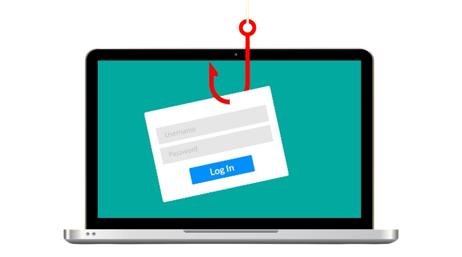
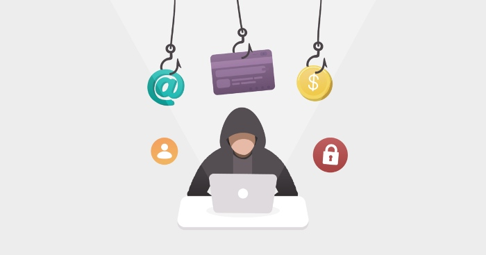

Phishing Attack Prevention: How to Identify & Avoid Phishing
Phishing and other types of fraud are on the increase. In fact, 2016 saw an increase in incidents of phishing and BEC attacks of more than 600%. However, phishing attacks can be stopped. Phishing is a type of fraud in which cybercriminals use sophisticated techniques to persuade users to give them financial or personal information by pretending to be trustworthy individuals or organizations.
Prevent Phishing Attacks
Phishing scams are one of the most common and widespread computer security breaches out there, as they are a highly profitable form of cybercrime. As common and easy to spot as they may be, however, you can avoid these devious scams by knowing how to correctly identify them and prevent yourself from falling victim.

Tips to Prevent Phishing
- Know what a phishing scam looks like: Email and social media try to hack people every day. You can't avoid it! As a matter of fact, hackers are getting better at what they do all the time. But, if you know who may fall victim to their methods, you can help point them in the right direction. If you let your employees know about possible attacks ahead of time and start brainstorming on strategies to combat these tactics, you can cut down the risk.
- Don’t click on that link: Even if you know the sender or where the message is coming from, it's recommended to be cautious and never click a link blindly in email or instant message. Most phishing attacks are fairly transparent, but a few can be pretty sophisticated with their URL appearing as a copy of the genuine destination set up to capture your login and credit card information. If it's possible, go directly to the site through your search engine instead of clicking on any links in order to protect yourself!
- Don’t give your information to an unsecured site: If you can't see HTTPS before your site's address, or if it doesn’t have a closed padlock icon beside it, do not enter any sensitive information or download files from that site. Security certificates and website addresses must match for you to be fully protected.
- Rotate passwords regularly: If you have social media accounts and emails, you should get into the habit of periodically changing your passwords so that your online life doesn’t fall under an attacker’s influence. Hacking is on the rise, and unfortunately it happens more often than expected, which means that you shouldn’t be anxious about adding layers of protection to your daily routine. You may not realize it, but you could be under attack right now! So make sure there are a few different passwords that govern all of your emails, social media accounts and whatever else.
- Don’t ignore those updates: Sometimes it can be frustrating to receive so many security updates, especially if you have a lot on your plate. To help avoid feeling overwhelmed by them all, as tempting as this might be at times, try not to put the updates off or ignore any of them altogether. That would only put you at risk for attacks on your website and possibly your computer! Updates are released for a reason – to ensure that you’re protected from the newest types of phishing.
- Install firewalls: Firewalls are a popular security system, which have become very effective at blocking malicious traffic. This can be both desktop and network firewalls, acting as a shield between your computer and an attacker or virus through the internet. Both methods should be used together to bolster all networks against cyber attacks.
- Don’t be tempted by those pop-ups: Pop-ups aren’t just annoying; they are often linked to malware as part of a phishing attack. Most browsers now allow you to download and install free ad-blocker software that will help you to block most of the malicious pop-ups. If one does manage to evade the ad-blocker though, don’t be tempted to click! Occasionally pop-ups will try and fool you by placing the “Close” button in an obscure place, so always look for an “x” in one of the corners.

To summarize, Understanding the risks of phishing attacks and some of the most common pretexts is an important first step in protecting against them. However, modern phishing campaigns are sophisticated, and it is probable that, eventually, someone will fall for one.